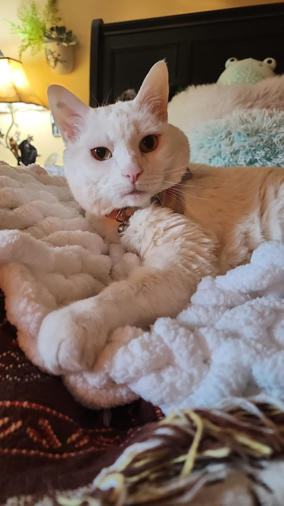
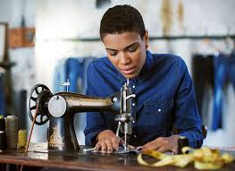
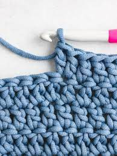
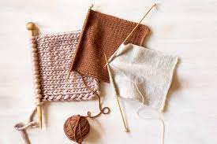
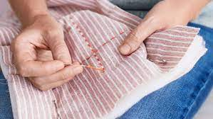

Hobbies
My biggest hobby is obsessing over my cat, Daisy

After my cat, these are my other hobbies and interests. For fun times, I want to do a countdown of my 3 current hobbies and then shout out some honorable mentions!
My Current Hobbies
- Sewing

- Crochet

- Knitting

My Honorable Mentions
- Hand Quilting

- Bobbin Lace